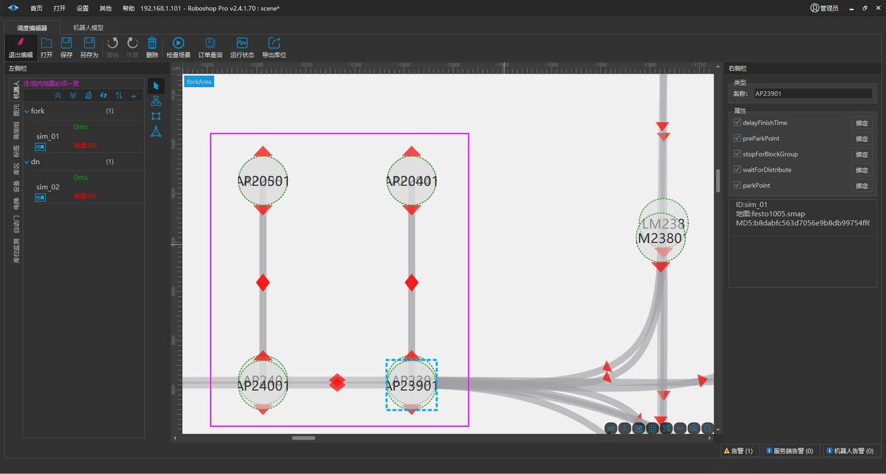

header-v2
SEER Robotics
不同车型在同一区域实施
Last updated: Apr 29
不同车型在同一区域实施
不同车型在同一区域实施
Modified April 29, 2024
地图对齐
描述: 不同类型的机器人，在同一物理空间内实施时需要对它们的地图做原点对齐
1.
需要把不同机器人使用【矫正地图】功能实现 原点(0,0) 一致，查看地图中共有的参照点作为原点(0,0)
矫正地图
2.
把矫正的地图重新同步给机器人并添加到场景中 （使用不同地图的机器人，不能在同一个机器人组中）
3.
需要保证物理空间一致的站点命名也要一致， 下图这种操作是 错误 的

多层库位注意事项
如果同一个区域需要地牛叉取库位 Loc-01 的货物， 叉车叉取 Loc-01、Loc-02、Loc-03、Loc-04 货物，在实施时需要使用右边这种方式